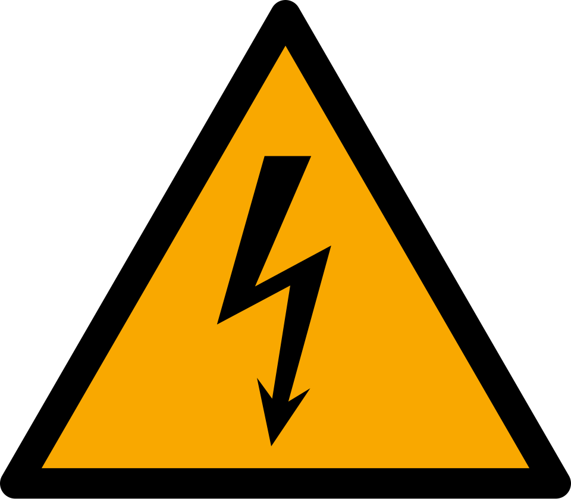
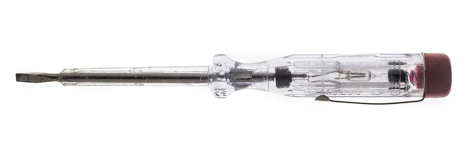
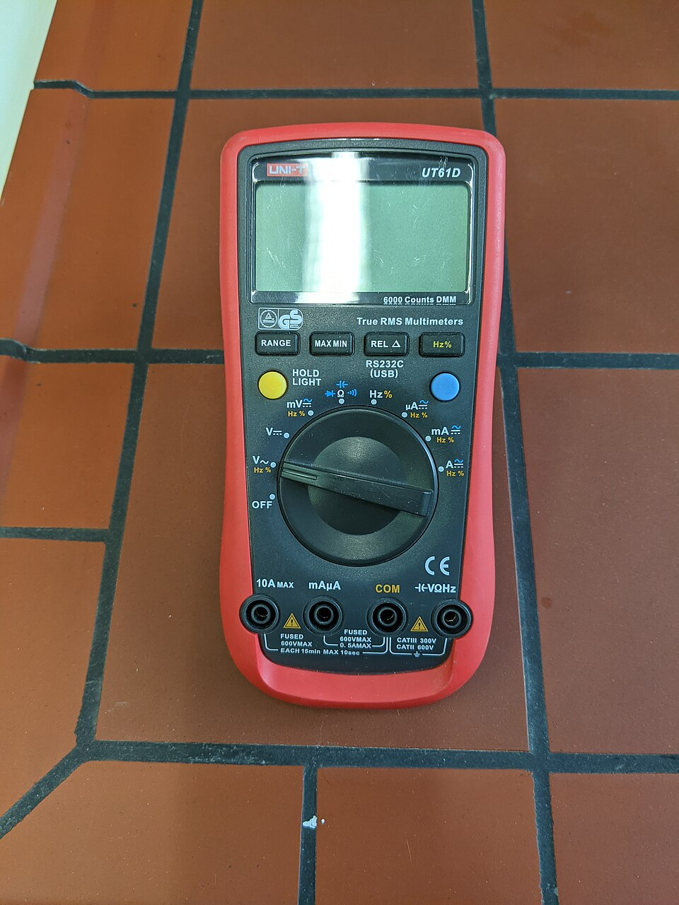
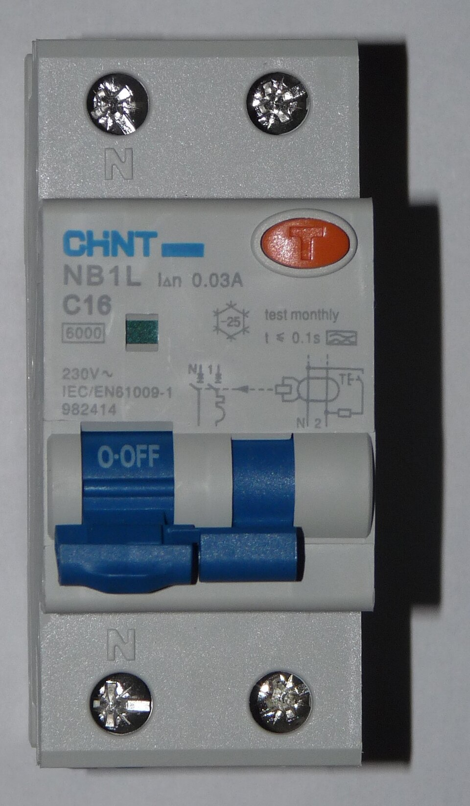
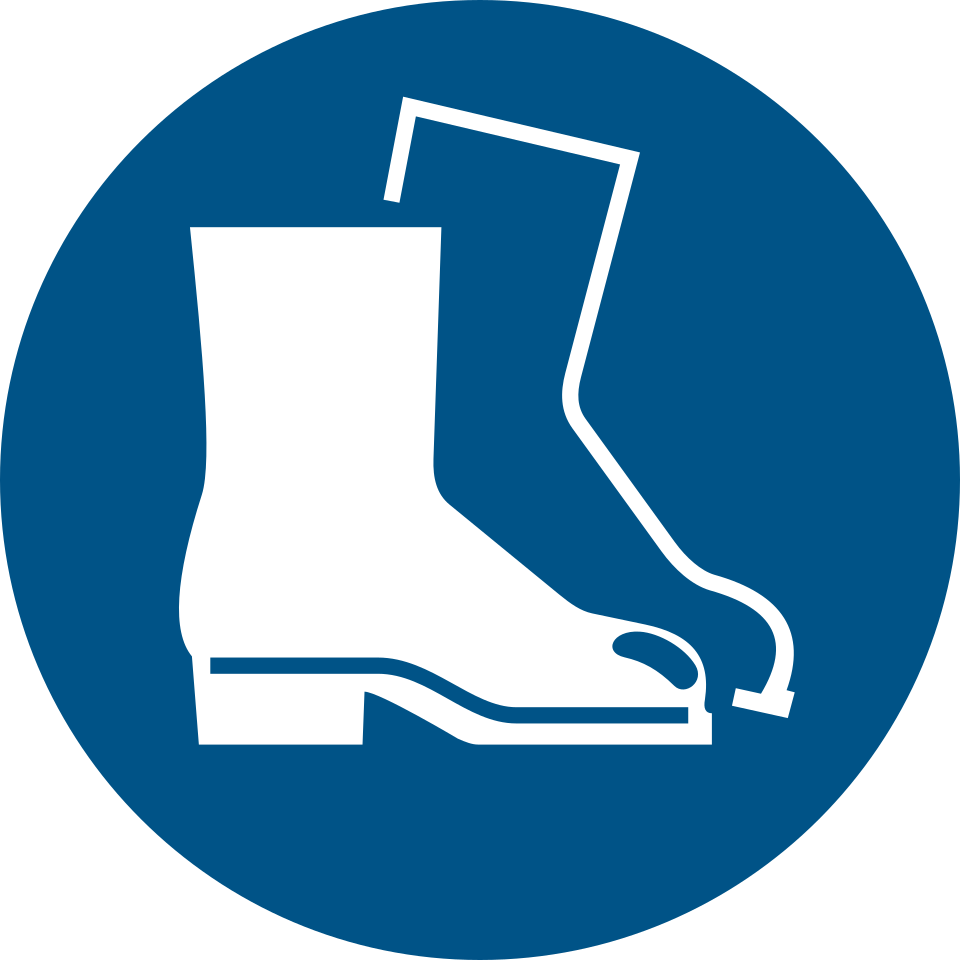
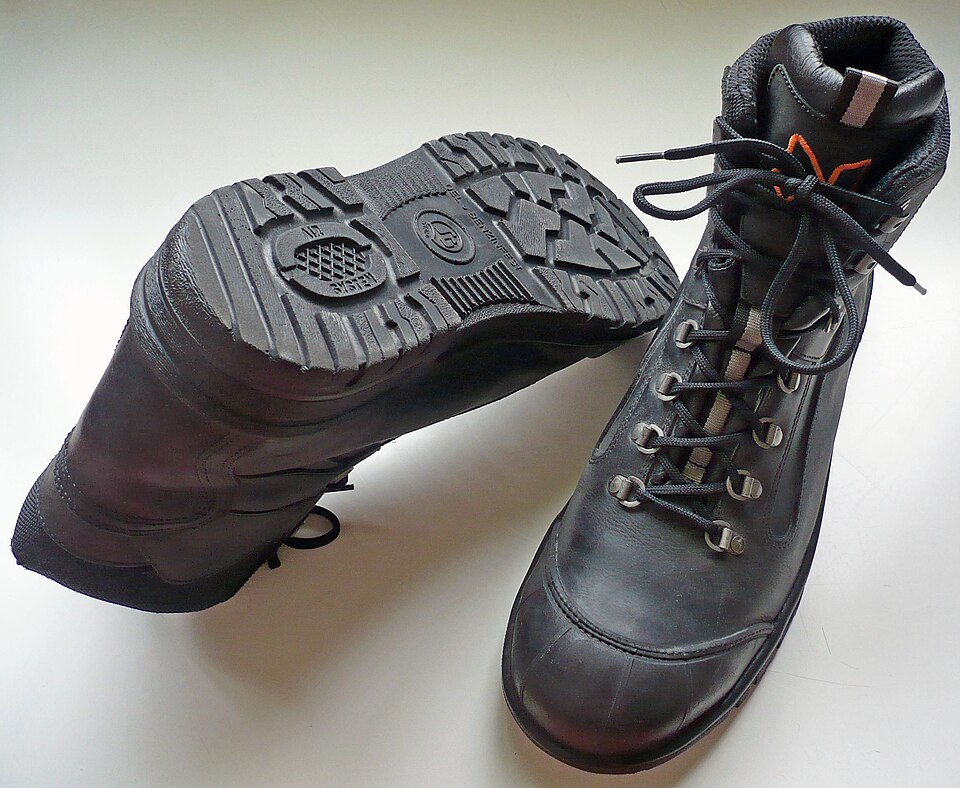
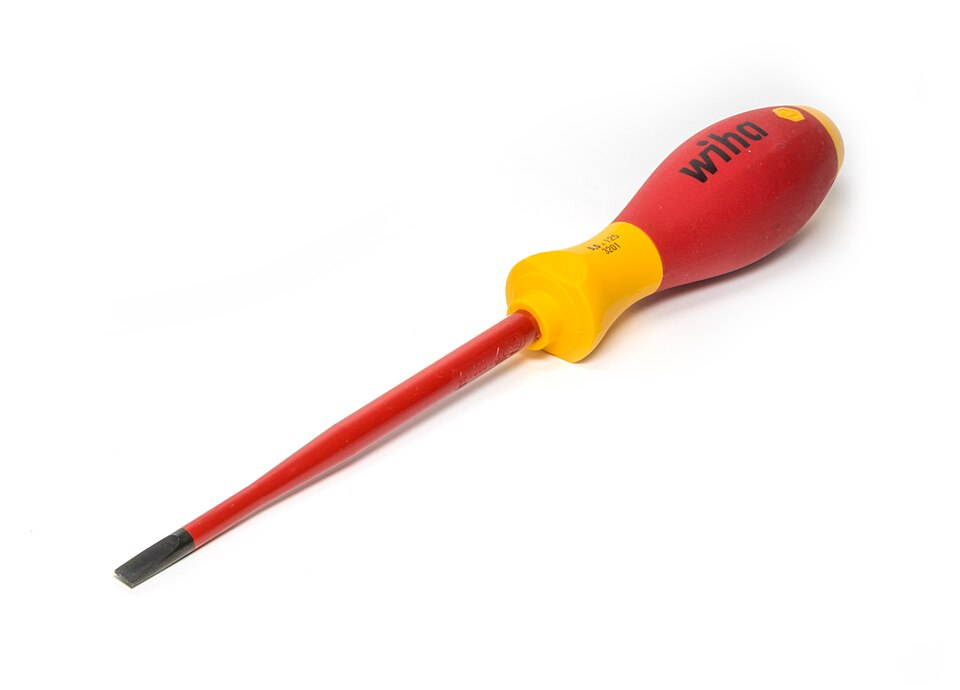
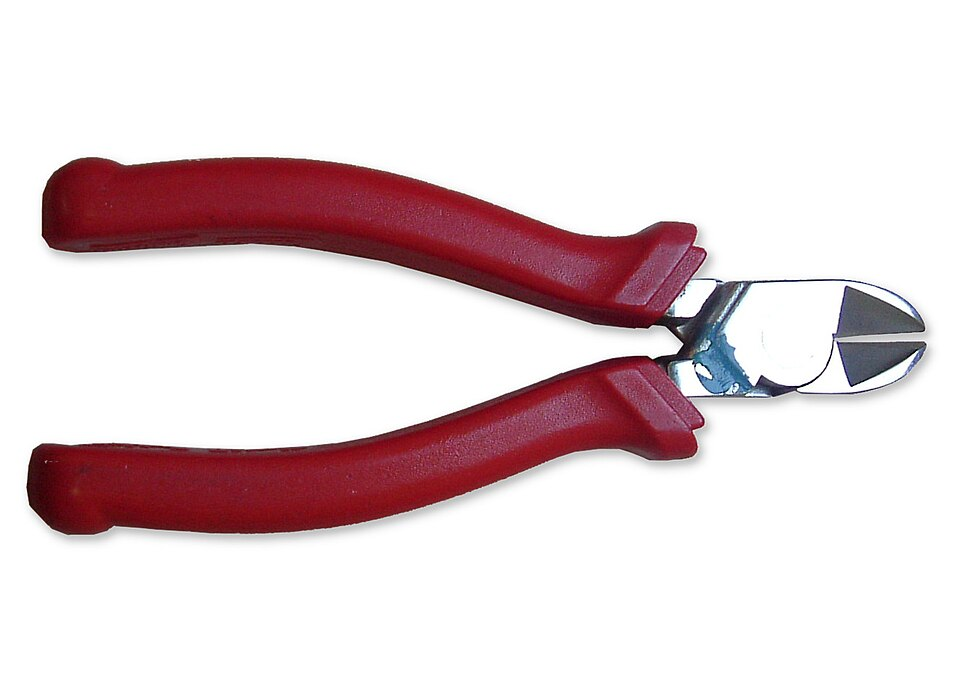
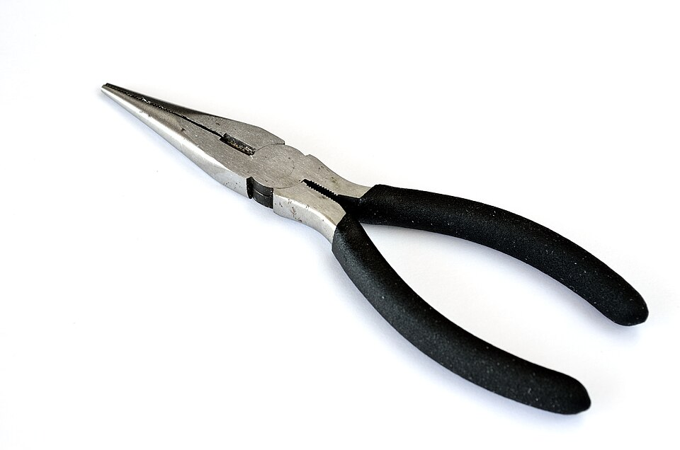

อันตรายของไฟฟ้า
และการปฏิบัติงาน
ที่ปลอดภัย

งานไฟฟ้าและอิเล็กทรอนิกส์เบื้องต้น
20100-1005
วิชาพื้นฐาน
ทุกสาขา ประเภทวิชาอุตสาหกรรม
ท 1 · ป 3
ทฤษฎี 1 ชม. ปฏิบัติ 3 ชม.
ต่อสัปดาห์ · 2 หน่วยกิต
18 สัปดาห์
11 หน่วยการเรียนรู้
+ ประเมินรวมสัปดาห์สุดท้าย
เป้าหมาย: วัด ทดสอบ ประกอบวงจรไฟฟ้าและอิเล็กทรอนิกส์ และใช้เครื่องมือวัด ตามหลักความปลอดภัย
11 หน่วย ใน 18 สัปดาห์
| สัปดาห์ | หน่วยการเรียนรู้ |
|---|---|
| 1–2 | 1 ความปลอดภัยในงานไฟฟ้าฯ |
| 3–4 | 2 อ่านสัญลักษณ์ไฟฟ้าฯ |
| 5–6 | 3 ประกอบวงจร คำนวณพลังงาน |
| 7–8 | 4 ควบคุมมอเตอร์ อุปกรณ์ป้องกัน |
| 9–10 | 5 หม้อแปลง รีเลย์ ไมค์ ลำโพง |
| 11–12 | 6 ตัวต้านทาน ตัวเก็บประจุ ขดลวด |
| สัปดาห์ | หน่วยการเรียนรู้ |
|---|---|
| 13 | 7 ตรวจสอบสารกึ่งตัวนำ |
| 14 | 8 แหล่งจ่ายไฟกระแสตรง |
| 15 | 9 ใช้มัลติมิเตอร์ |
| 16 | 10 เครื่องกำเนิดสัญญาณ ออสซิลโลสโคป |
| 17 | 11 ประกอบ วัด ทดสอบวงจร |
| 18 | ประเมินผลลัพธ์รายวิชา |
คะแนนมาจากไหน?
น้ำหนักคะแนนรายวิชา
- หน่วยที่ 1–6 หน่วยละ 10%
- หน่วยที่ 7–11 หน่วยละ 5%
- ประเมินรวมสัปดาห์ที่ 18 15%
เกณฑ์ผ่านหน่วยที่ 1 (80%)
- แบบทดสอบ 16 / 20
- ใบงานละ 20 / 25
- พฤติกรรม 12 / 15
อันตรายของไฟฟ้าและการปฏิบัติงานที่ปลอดภัย
5.1 คุณสมบัติ ประโยชน์ และโทษของไฟฟ้า
ตัวนำ ฉนวน · ไฟฟ้าช็อต · ไฟฟ้าดูด
5.2 อันตรายของไฟฟ้าต่อร่างกาย
สัมผัสโดยตรง/โดยอ้อม · ปริมาณกระแส
5.3 ข้อควรปฏิบัติในการใช้ไฟฟ้า
ตรวจก่อนใช้ · ตัดไฟ · PPE · สายดิน · RCD
ใบงานที่ 1.1 (ปฏิบัติ 3 ชม.)
สำรวจอุปกรณ์ป้องกันภัยและเครื่องมือช่าง
ทำงานไฟฟ้าได้อย่างปลอดภัย
- ทำงานตามกฎความปลอดภัยทางไฟฟ้า
- เลือกเครื่องมือและอุปกรณ์ป้องกันภัยให้เหมาะกับงาน
- ช่วยเหลือผู้ถูกไฟฟ้าดูดได้ถูกวิธี (เรียนสัปดาห์ที่ 2)
อ้างอิงมาตรฐานฝีมือแรงงานแห่งชาติ ช่างอิเล็กทรอนิกส์ ระดับ 1 · ข้อ 1.1 ความปลอดภัยในการปฏิบัติงาน
เรียนจบสัปดาห์นี้ นักเรียนสามารถ…
- บอกประโยชน์และโทษของไฟฟ้าได้ถูกต้อง (4.1)
- อธิบายอันตรายของไฟฟ้าต่อร่างกายมนุษย์ได้ถูกต้อง (4.2)
- บอกข้อควรปฏิบัติในการใช้ไฟฟ้าอย่างปลอดภัยได้ (4.3)
- เตรียมอุปกรณ์ ทำงานอย่างรับผิดชอบ ตรงต่อเวลา (4.7)
ถ้าเป็นแบบนี้ จะเกิดอะไรขึ้น?
มือเปียก
เสียบปลั๊ก
สายไฟฉนวนแตก
ยังฝืนใช้ต่อ
ตู้เย็นไฟรั่ว
เท้าเปล่าไปจับ
เกิดอันตรายอะไร? เพราะอะไร? 🤔
คุณสมบัติ ประโยชน์
และโทษของไฟฟ้า
ไฟฟ้าคือพลังงานที่ใช้ได้ทั้งคุณและโทษ
“ภัยมืด” มองไม่เห็น ต้องตรวจด้วยเครื่องมือ


ห้ามใช้มือแตะ
ทดสอบว่ามีไฟ
โดยเด็ดขาด
เปลี่ยนเป็นพลังงานรูปอื่นได้แทบทุกแบบ
ความร้อน
เตารีด หม้อหุงข้าว หัวแร้ง
ความเย็น
ตู้เย็น ตู้แช่ แอร์
พลังงานกล
มอเตอร์ พัดลม สว่าน เครื่องซักผ้า
อำนาจแม่เหล็ก
กระดิ่ง หม้อแปลง ลำโพง
แสงสว่าง
ไฟฉาย หลอดไฟ งานเชื่อม
ความสะดวกสบาย
ทีวี คอมพิวเตอร์ วิทยุสื่อสาร
ในรถยนต์คันเดียว ก็มีครบเกือบทุกแบบ 🚗
มอเตอร์สตาร์ท
ไฟฟ้า → พลังงานกล
ไฟส่องสว่าง
ไฟฟ้า → แสง
แตร
ไฟฟ้า → แม่เหล็ก → เสียง
เกิดจากใช้ผิดวิธี ขาดความระวัง ประมาท
ไฟฟ้าช็อต
(Short Circuit) ไฟฟ้าลัดวงจร
→ ความร้อนสูง เพลิงไหม้
ไฟฟ้าดูด
(Electric Shock)
→ กระแสผ่านร่างกาย พิการ/เสียชีวิต
ไฟฟ้าช็อต (Short Circuit)
- กระแสไหลครบวงจรโดยไม่ผ่านภาระ
- ไม่มีภาระจำกัด → กระแสสูงมาก
- เกิดความร้อน → เพลิงไหม้
ไฟฟ้าดูด (Electric Shock)
- กระแสไหลผ่านร่างกายลงดิน หรือครบวงจร
- กล้ามเนื้อเกร็ง สะบัดให้หลุดเองไม่ได้
- อาจพิการหรือเสียชีวิต
“ช็อต” ภาษาไทย ≠ “shock” ภาษาอังกฤษ
| เราพูดว่า | ความหมาย | ภาษาอังกฤษ |
|---|---|---|
| ไฟฟ้าช็อต | ไฟฟ้าลัดวงจร → ไฟไหม้ | short circuit |
| ไฟฟ้าดูด | กระแสผ่านคน → บาดเจ็บ | electric shock |
อ่านคู่มือภาษาอังกฤษ เจอคำว่า shock ให้นึกถึง “คนถูกไฟดูด”
- บอกประโยชน์ของไฟฟ้าอย่างน้อย 3 ข้อ พร้อมยกตัวอย่างอุปกรณ์
- ไฟฟ้าช็อตกับไฟฟ้าดูด ต่างกันอย่างไร แต่ละแบบอันตรายอย่างไร
💬 คุยกับเพื่อนข้าง ๆ 2 นาที แล้วสุ่มตอบ
อันตรายของไฟฟ้า
ต่อร่างกายมนุษย์
ร่างกายเราก็เป็น “ตัวนำ”
สัมผัสโดยตรง กับ โดยอ้อม
โดยตรง (Direct Contact)
แตะส่วนที่มีไฟ เช่น สายไฟฉนวนชำรุด
โดยอ้อม (Indirect Contact)
แตะโลหะที่มีไฟรั่ว เช่น ตัวถังเครื่องใช้ไฟฟ้า
| กระแสผ่านร่างกาย | ปฏิกิริยาที่เกิดขึ้น | |
|---|---|---|
| ต่ำกว่า 0.5 mA | ยังไม่มีผล หรือไม่รู้สึก | |
| 1 mA | รู้สึกจั๊กจี้ หรือกระตุกเล็กน้อย | |
| 5 mA | สั่นเล็กน้อย ไม่เจ็บ ส่วนใหญ่ยังหนีได้ | |
| 6–25 mA (หญิง) 9–30 mA (ชาย) | เจ็บปวด สูญเสียการควบคุมกล้ามเนื้อ ขยับไม่ได้ | |
| 50–150 mA | เจ็บปวดมาก ระบบหายใจหยุดทำงาน เสียชีวิตได้ | |
| 1–4.3 A | หัวใจหยุดเต้น เส้นประสาทถูกทำลาย เสียชีวิต | |
| 10 A | หัวใจหยุดเต้น ถูกเผาไหม้รุนแรง เสียชีวิต |
เสริม ค่าโดยประมาณ กรณีกระแสไหลจากมือถึงเท้านาน 1 วินาที [2] · OSHA ใช้ “ต่ำกว่า 1 mA” เป็นระดับที่ไม่รู้สึก ส่วน 0.5 mA เป็นเกณฑ์ตาม IEC 60479-1 [4]
กระแส = แรงดัน ÷ ความต้านทาน (I = V / R)
ผิวแห้ง ≈ 100,000 Ω
→ รู้สึกกระตุกเล็กน้อย
ผิวเปียก ≈ 1,000 Ω
→ เกิน 50–150 mA เสียชีวิตได้!
ตัวอย่างประมาณการด้วยไฟบ้าน 220 V · ค่าความต้านทานผิวและวิธีคิดจาก OSHA [3] · กฎของโอห์มจะเรียนละเอียดในหน่วยที่ 3
- สัมผัสไฟฟ้าโดยตรงกับโดยอ้อม ต่างกันอย่างไร ยกตัวอย่าง
- กระแสเท่าใดที่ทำให้อวัยวะเกี่ยวกับการหายใจหยุดทำงาน
ข้อควรปฏิบัติในการใช้ไฟฟ้า
อย่างถูกต้องปลอดภัย
ปลอดภัยไว้ก่อน เริ่มจาก “ตรวจก่อนใช้”
ตรวจก่อนใช้ · ห้ามเปียก
ตรวจสายไฟและอุปกรณ์ทุกครั้ง
ฉนวนชำรุด/แตกร้าว → เปลี่ยนใหม่ทันที
ห้ามมือเปียก ห้ามยืนพื้นเปียก
น้ำทำให้ความต้านทานผิวลดลงมาก กระแสผ่านง่าย
เครื่องตัดไฟรั่ว = ด่านสุดท้าย
- ห้ามใช้เครื่องใช้ไฟฟ้าเกินพิกัดสายไฟหรือเต้ารับ
- ห้ามแหย่โลหะเข้ารูเต้ารับ
- ติดตั้งเครื่องตัดไฟรั่ว (RCD) ตัดไฟเองเมื่อมีไฟรั่ว
เสริม กันไฟดูดต้องพิกัดไฟรั่วไม่เกิน 30 mA มี มอก. และกดปุ่ม Test อย่างน้อยทุก 6 เดือน [5]

0.03 A = 30 mA
ใช้ไฟฟ้าอย่างปลอดภัย 9 ข้อ
- ตรวจสายไฟ/อุปกรณ์ก่อนใช้
- ฉนวนชำรุด เปลี่ยนทันที
- ห้ามมือเปียก/พื้นเปียก
- ซ่อม: ตัดเบรกเกอร์ + แขวนป้าย
- ใช้เครื่องมือด้ามหุ้มฉนวน
- สวม PPE ให้ครบ
- ต่อสายดินเครื่องตัวถังโลหะ
- ไม่เกินพิกัด ไม่แหย่เต้ารับ
- ติดตั้งเครื่องตัดไฟรั่ว (RCD)
- บอกข้อควรปฏิบัติในการใช้ไฟฟ้าอย่างปลอดภัย อย่างน้อย 5 ข้อ
💡 ลองย้อนไปตอบสถานการณ์ในบทนำ: มือเปียก · ฉนวนแตก · ตู้เย็นไฟรั่ว
การสำรวจอุปกรณ์ป้องกันภัย
และเครื่องมือช่างไฟฟ้า
จำแนก · ตรวจสภาพ · เลือกใช้ให้เหมาะกับงาน
4 อย่างที่ต้องรู้จัก


รองเท้านิรภัย
ป้องกันเท้า
จากของหล่นทับ/ของมีคม
ไขควง และคีม

ขัน-คลายสกรู

ตัดสายไฟ ตัดขาอุปกรณ์

จับ ดัด งอสายในที่แคบ
ก่อนเริ่มใบงาน ⚠️
- แต่งกายถูกระเบียบก่อนเข้าโรงฝึกงานทุกครั้ง
- เครื่องมือฉนวนชำรุด/แตกร้าว ห้ามใช้เด็ดขาด
- ไม่ต่อวงจรกับไฟจริง ใบงานนี้สำรวจและตรวจสภาพเท่านั้น
- เสร็จแล้วเก็บเครื่องมือเข้าที่ให้เรียบร้อย
3 ตอน ใน 3 ชั่วโมง
ตอนที่ 1
สำรวจ PPE
บันทึก ชื่อ · หน้าที่ · สภาพ
ตอนที่ 2
ตรวจเครื่องมือช่าง
สภาพฉนวน + เหตุผล
ตอนที่ 3
สรุปข้อควรปฏิบัติ ≥ 5 ข้อ
นำเสนอ ≤ 5 นาที
กรอกตารางให้ครบทุกช่อง
ตอนที่ 1 อุปกรณ์ป้องกันภัย
| ที่ | ชื่ออุปกรณ์ | หน้าที่ / ป้องกันอันตรายใด | สภาพ | หมายเหตุ |
|---|---|---|---|---|
| 1 | แว่นตานิรภัย | กันเศษวัสดุกระเด็นเข้าตา | ใช้ได้ | – |
ตอนที่ 2 เครื่องมือช่างไฟฟ้า
| ที่ | ชื่อเครื่องมือ | หน้าที่การใช้งาน | สภาพฉนวน | เหตุผลประกอบ |
|---|---|---|---|---|
| 1 | คีมตัด | ตัดสายไฟ | ชำรุด | ด้ามแตกร้าว |
25 คะแนน · ผ่าน 20 คะแนน (80%)
| ที่ | รายการประเมิน | คะแนน |
|---|---|---|
| 1 | ชื่อและหน้าที่ของอุปกรณ์ป้องกันภัย (ตอนที่ 1) | 5 |
| 2 | ระบุสภาพความพร้อมของอุปกรณ์ป้องกันภัย (ตอนที่ 1) | 5 |
| 3 | ชื่อและหน้าที่ของเครื่องมือช่างไฟฟ้า (ตอนที่ 2) | 5 |
| 4 | สรุปข้อควรปฏิบัติได้ครบถ้วน (ตอนที่ 3) | 5 |
| 5 | ความละเอียดรอบคอบ และส่งงานตรงเวลา | 5 |
สิ่งที่เราได้เรียนในสัปดาห์นี้
5.1 ประโยชน์และโทษ
ใช้ถูกวิธีเกิดประโยชน์ · ผิดวิธีเกิดไฟฟ้าช็อต/ไฟฟ้าดูด
5.2 อันตรายต่อร่างกาย
กระแสยิ่งมาก ยิ่งนาน ยิ่งอันตราย · 50–150 mA เสียชีวิตได้
5.3 ข้อควรปฏิบัติ
ตรวจก่อนใช้ · ตัดไฟ+ป้าย · PPE · สายดิน · RCD
ใบงาน 1.1
รู้จัก PPE และเครื่องมือ · ชำรุด ห้ามใช้
ทบทวนแล้วลองทำดู!
📖 การบ้าน: อ่านล่วงหน้าเรื่อง การช่วยเหลือผู้ถูกไฟฟ้าดูด (สัปดาห์ที่ 2)
เอกสารอ้างอิง
- จิรกิตติ์ วราภรณ์. แผนการจัดการเรียนรู้ วิชา 20100-1005 งานไฟฟ้าและอิเล็กทรอนิกส์เบื้องต้น (หลักสูตร ปวช. 2567) หน่วยที่ 1 ใบความรู้ที่ 1.1 และใบงานที่ 1.1. วิทยาลัยเทคนิคอุตรดิตถ์. (เอกสารต้นฉบับของบทเรียนนี้)
- Occupational Safety and Health Administration. (2002). Controlling Electrical Hazards (OSHA 3075, Revised). U.S. Department of Labor. https://www.osha.gov/sites/default/files/publications/osha3075.pdf
- Occupational Safety and Health Administration. Construction eTool: Electrical Incidents – How Electrical Current Affects the Human Body. (สำเนาเก็บถาวร 17 พ.ย. 2014) http://web.archive.org/web/20141117075356/https://www.osha.gov/SLTC/etools/construction/electrical_incidents/eleccurrent.html
- International Electrotechnical Commission. (2005). IEC/TS 60479-1: Effects of current on human beings and livestock – Part 1: General aspects. IEC.
- การไฟฟ้าส่วนภูมิภาค. (8 ธันวาคม 2564). PEA แนะนำติดตั้งเครื่องตัดไฟรั่ว (RCD) เพื่อป้องกันอันตรายที่อาจเกิดขึ้นจากเครื่องใช้ไฟฟ้า. ฐานเศรษฐกิจ. https://www.thansettakij.com/pr-news/economy/506018
เข้าถึงแหล่งข้อมูลออนไลน์เมื่อ 19 ตุลาคม 2569